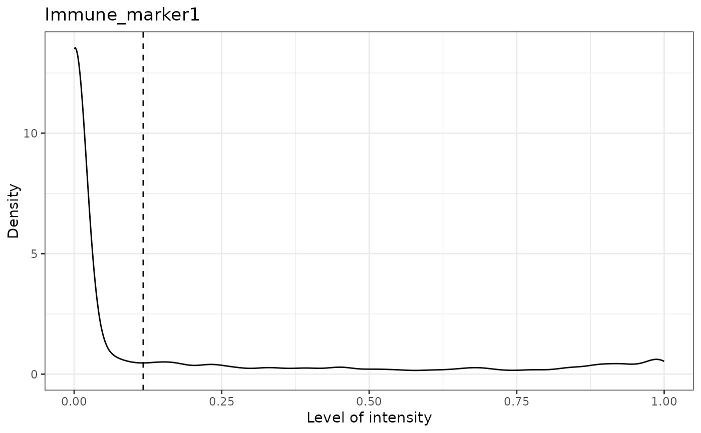

Predicts cell phenotypes based on marker intensity levels. If no prior cell phenotypes are available, it adds the phenotypes to the SpaitalExperiment object used as input. If reference cell phenotypes are available, it produces a density plot showing predicted cutoff of a positive reading for marker intensity and it returns a dataframe containing the predicted intensity status for a particular marker.
predict_phenotypes(
spe_object,
thresholds = NULL,
tumour_marker,
baseline_markers,
nuclear_marker = NULL,
reference_phenotypes = FALSE,
markers_to_phenotype = NULL,
plot_distribution = TRUE
)SpatialExperiment object in the form of the output of
format_image_to_spe.
(Optional) Numeric Vector specifying the cutoff of a positive reading. The order must match the marker order, and it should be NA for DAPI.
String containing the tumour_marker used for the image. If tumor cells are known, annotate tumor cells as 1 and non-tumor cells as 0, and include the rowname.
String Vector. Markers not found on tumour cells to refine the threshold used for tumour cell phenotying.
String. Nuclear marker used.
Boolean. TRUE or FALSE value whether there are reference phenotypes for the sample obtained by the user through other means (e.g. HALO or InForm). If there are reference phenotypes available, a matrix of predicted phenotypes, intensities, and reference phenotypes will be returned, which can be used as input to "marker_prediction_plot". If no reference phenotype available, the result of the function will be added to the spe object used in the input. Note that if a reference phenotype is to be used, the phenotypes must be an explicit combination of positive markers (e.g. AMACR,PDL1), as opposed to descriptive (PDL1+ tumour cells).
String Vector. Markers to be included in the phenotyping. If NULL, then all markers will be used. DAPI needs to be excluded.
Boolean. If TRUE, plots of the marker intensities distributions and cutoffs are plotted.
An updated spe object with cell phenotypes or a data.frame of predicted phenotypes
# keep the original phenotypes
predicted_result <- predict_phenotypes(spe_object = simulated_image, thresholds = NULL,
tumour_marker = "Tumour_marker",baseline_markers = c("Immune_marker1", "Immune_marker2",
"Immune_marker3", "Immune_marker4"), reference_phenotypes = TRUE)
#> [1] "Tumour_marker"
#> [1] "Immune_marker1"
#> [1] "Immune_marker2"
#> [1] "Immune_marker3"
#> [1] "Immune_marker4"
# update the predicted phenotypes
predicted_spe_image <- predict_phenotypes(spe_object = simulated_image, thresholds = NULL,
tumour_marker = "Tumour_marker",baseline_markers = c("Immune_marker1", "Immune_marker2",
"Immune_marker3", "Immune_marker4"), reference_phenotypes = FALSE)
#> [1] "Tumour_marker threshold intensity: 0.445450443784465"
#> [1] "Immune_marker1 threshold intensity: 0.116980867970434"
#> [1] "Immune_marker2 threshold intensity: 0.124283809517202"
#> [1] "Immune_marker3 threshold intensity: 0.0166413130263845"
#> [1] "Immune_marker4 threshold intensity: 0.00989731350898589"
